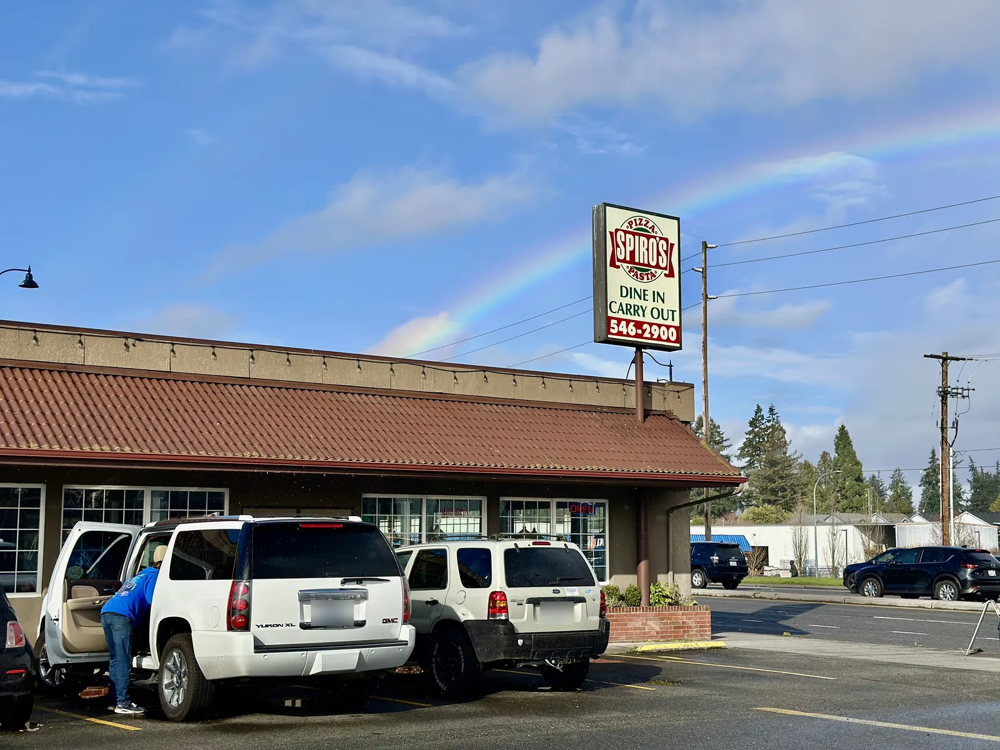

About us
Built at a restaurant, for restaurants.
Rotaserie is scheduling made by people who've worked the floor. It isn't built for an office; it's built for the manager making next week's schedule on a phone between lunch and dinner.
Meet the founder
Why I built Rotaserie.
I grew up working at Spiros. I saw how much of my mom's time went into the schedule: building the week, keeping up with swaps and time-off requests, and fixing it all again when plans changed.
I wanted to give her that time back, so I built Rotaserie. Now the schedule at Spiros is built and shared from one place, and everyone has it on their phone.
Lots of small restaurants and businesses lose those same hours every week. I want to help them the way it helped my mom.
Robert Banchero
If it takes a training session, it's too complicated. Staff are in by scanning a QR code.
We help you get your team, roles and usual shifts in, so you're running the same day.
Everything included, no add-ons, and your data is always yours to take with you.
Clients
Every week at Spiros.
Spiros, a restaurant in Shoreline, Washington, is where Rotaserie was built and where it runs every week.
- The weekly schedule is built and published in Rotaserie
- Staff swap shifts, pick up open ones and request time off from their phones
- Managers approve requests in one place instead of in group texts
- Every feature is shaped by how a real restaurant week works

Let's give you your time back.
Tell us about your restaurant, and we'll set it up with you.